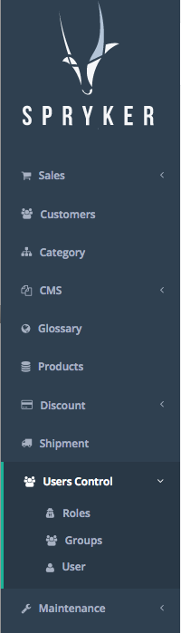
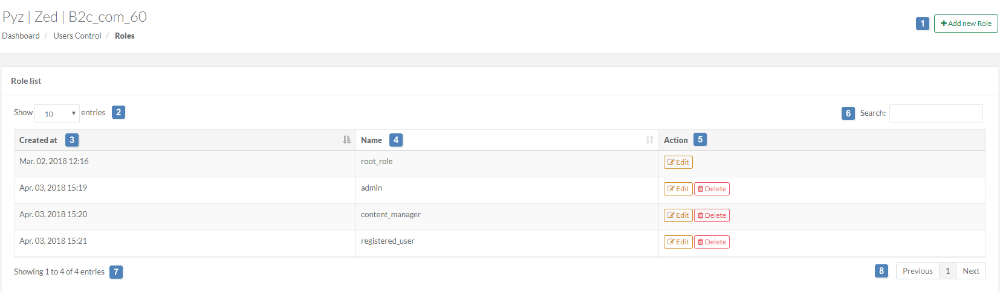
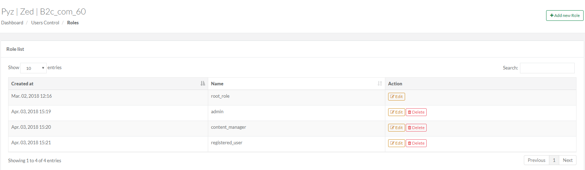
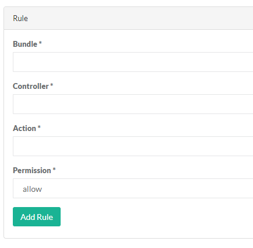
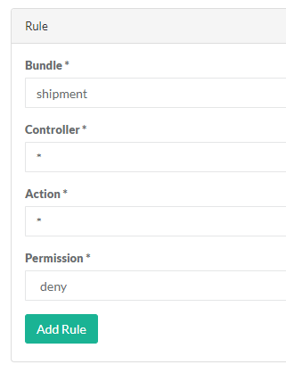
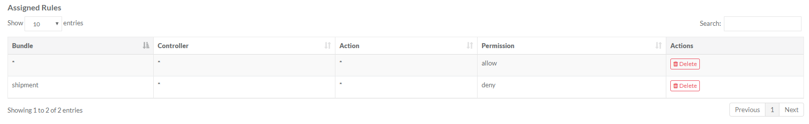
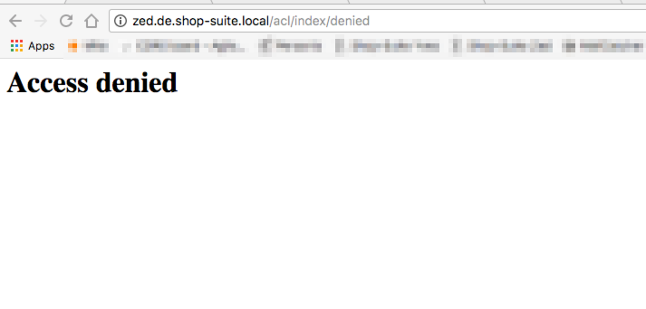
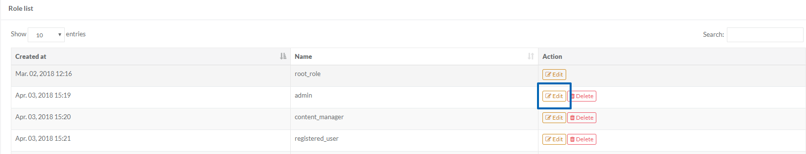
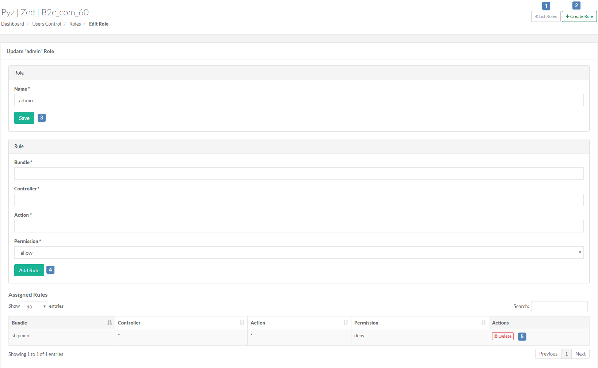

User Roles
To define what a user can or cannot do in the back-office application, Administration Interface has a User Control module.
Role Management section allows giving or restricting access to a particular action or module.
A new role can have one or more rules assigned to it. These rules can allow and deny the corresponding user to view a section (module) from the menu or take specific actions (e.g. edit a customer address).
This article describes how to add the new roles and manage them.
To access the Roles page, from the Administration Interface's main menu (on the left), click Users Control and then Roles.

The Roles page consists of the following elements:

In the table below, you will find descriptions of the screen elements by their number:
| # | Element | Description |
| 1 | Add new Role | This button creates a new role. See Creating a New Role section below for more details. |
| 2 | Show [number] entries | Here you can select how many items you want to see in the list of customers (10, 25, 50, 100). |
| 3 | Created at | Date when the role was created. |
| 4 | Name | Name of the role. |
| 5 | Action | Click a respective button to either Edit or Delete the role. See Managing Roles Details section below for information on how to do that. |
| 6 | Search | This field is for searching the customers. To find a specific customer, start typing any value contained in the table with the list of customers (registration date, e-mail etc.). As you type, the list of matching customers is created in the table. |
| 7 | Showing [number 1] to [number 2] of [number 3] entries [number 4] row selected | Shows how many entries ([number 1] to [number 2]) are displayed in the table. [number 2] depends on the value set in Show [number] entries (2), [number 3] represents total number of entries in the navigation table, [number 4] shows how many rows are selected. |
| 8 | Previous [page number] Next | [page number] is the number of the page you are currently on. Here you can switch to the previous or to the next page. |
To create a new role, follow the steps described below.
- On the left side navigation bar, select Users Control->Roles
- Click on the Add new Role button in the top right corner.

- Enter the name of the role and click the Create button.

- Next, you need to add a set of rules to the role you just created. The rule sets describe the permissions associated to that role; they can be set on module, controller or action level.
In the Rule section a set of rules can be added to the new role. The fields that are managing roles permissions are: Bundle, Controller, Action and Permission (allow or deny).
-
Enter the bundle name (e.g. sales, customer).
Each module from the left side menu corresponds to a module and can be identified by its URL (e.g. /sales). By filling this field with *, all possible modules are selected.
If you want to give access to all modules - you add * in all fields and Permission - allow.
If you want to restrict only some particular module you should first add access to all the modules and then restrict to a particular one. If a user has no allow rules, he will not be able to access back-office at all.Click here in order to learn how to get the bundle names.
-
Enter the controller name (e.g. /cms/page).
Each module has one or more controllers and can be identified by the URL that makes a request to their index action (e.g. /cms/page). By filling this field with *, all possible controllers for the module that was filled in at the previous step are selected.
- Enter the action name (e.g. /edit).
-
Fill in with one of the actions for the controller that was filled in at the previous step. By filling this field with *, all possible actions for the controller are selected.
Every URL in the Administration Interface is based on the following schema: /module/controller/action
For example, url_of_your_shop/discount/index/list is the address of the Discounts menu in the Administration Interface where:
discount - name of the module
index - the controller name
list - the action name
Sometimes controller and action are omitted. That means that in such a case a controller and an action will have index value by default. For example, url_of_your_shop/product-management will have the following values:
Name of the module: product-management
Name of the controller: index
Action name: index -
Select the permission for the rule. It can either be Allow or Deny.
- Click on Add Rule button in order to add the rule to the role.
Example: If it is necessary to restrict access to shipment section, then first you will need to give "allow" right to all the modules and then create a restriction rule for this particular module:

Eventually, you will have 2 rules in this case:

In this case if then user tries to access the Shipment module, they will see:

Once you are happy with the rules added to a particular role, you can assign the role to a user in Groups menu.
You can either Edit or Delete the role.
To Edit the role, click on Edit button in the list of the roles.

This button will take you to the Edit Role page.

By clicking on a respective button on the right, you can:
| # | Element | Description |
| 1 | List Roles | Return to the Roles page with the list of roles. |
| 2 | Create Role | Create one more role. |
| 3 | Save | Rename the existing role. |
| 4 | Add Rule | Modify the existing rule or set up a new one. |
| 5 | Delete | Delete the rule. |